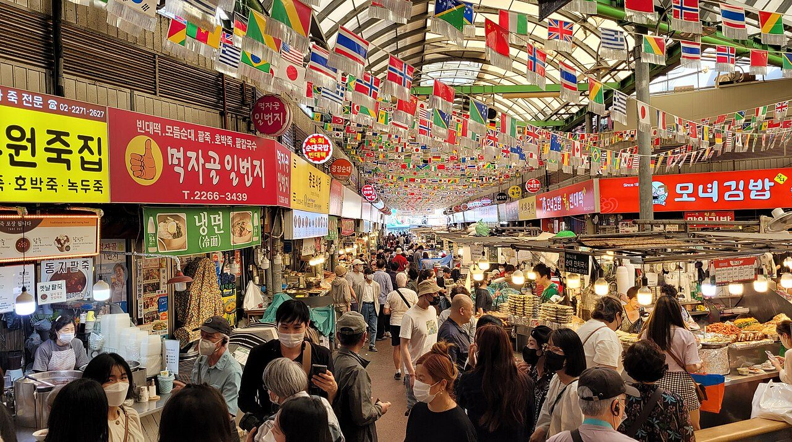
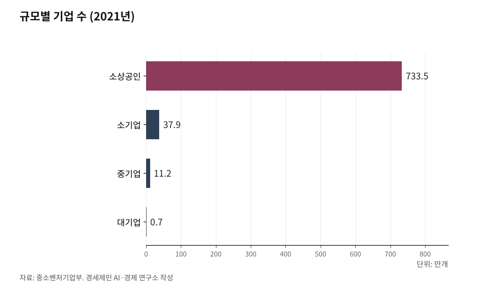

[경세제민] 자영업자① 자영업자는 사장인가 노동자인가
IMF 이후 강제 창업 570만명... 빚 1120조원의 덫
임차상인 다수는 "사업자 형식을 띤 노동자"
※사진: 편의점 점주가 밤늦게까지 일하는 모습. 일부 영세 점포는 저수익 문제가 지속된다.
자영업자, 소상공인, 중소기업의 법적 구분
AI경세제민=김갑봉 기자 | 경제 뉴스를 보면 자영업자, 소상공인, 중소기업이 혼용된다. 이들은 법적 정의와 통계 분류가 다르다.

자영업자는 통계청 경제활동인구조사의 분류다. 혼자 또는 무급가족종사자와 함께 자기 사업을 하는 사람이다. 고용원 유무를 합산한 자영업자가 2024년 약 570만명이다.
소상공인은 소상공인기본법상 법적 정의다. 중소기업기본법(1966년)이 중소기업 육성의 기본법이고, 소상공인기본법(2020년)이 더 영세한 사업자를 위한 특별법이다. 두 개 법이 필요한 이유는 편의점주와 제조업 50인 기업은 둘 다 소기업이지만 지원 방식이 달라야 하기 때문이다.
기업 규모별 구분과 현황(2021년 중소벤처기업부 중소기업기본통계):
대기업: 중소기업 범위 초과 기업, 전체의 0.1%(약 7000개)
중소기업: 771만4000개(99.9%)
중기업: 11만2000개
소기업: 37만9000개(소상공인 제외)
소상공인: 733만5000개(상시근로자 5~10명 미만)
계층별 경제적 현실:
소상공인실태조사 2022 결과를 보면 소상공인 평균 매출 2억3400만원, 영업이익 3100만원이다. 소상공인 대부분이 생계형 자영업자다. 월 매출 2000만원에서 각종 비용을 빼면 최저임금 수준인 경우가 많다.
한국 자영업자의 탄생 - IMF가 만든 강제 창업
1997년 IMF 외환위기가 한국 자영업의 분수령이다. 한국노동연구원 자료를 보면 1997년 자영업자 590만명이 2002년 621만2000명으로 증가했다. 정부가 창업지원을 실업대책의 일부로 활용했다.
퇴직금으로 치킨집, 커피숍 창업. 자발적이 아닌 구조조정 여파의 창업이었다. 2000년대 들어서도 대기업 조기퇴직자들이 50대에 창업하고, 청년 취업난으로 20-30대도 창업에 뛰어들었다. 프랜차이즈가 폭증했다.
나이스평가정보가 2025년 1월 발표한 자료를 보면 자영업 대출 1123조8000억원이다. 차주 312만6000명 중 51.4%(172만명)가 다중채무자다. 빚으로 시작해 빚으로 끝나는 구조다.
경제학적 분류 - 마르크스의 쁘띠부르주아지
마르크스는 자본론(1867)에서 자영업자를 "쁘띠부르주아지(소부르주아)"로 분류했다. 생산수단을 소유하지만 타인 노동을 착취할 정도는 아닌 계급이다. 대자본과 노동계급 사이에 낀 중간계급이다.
마르크스는 자본주의 발전과정에서 이들이 양극분해된다고 예측했다. 일부는 부르주아지로 상승하지만 대부분 프롤레타리아化된다. 많은 연구가 현대 한국 자영업자에게도 이런 양극화가 진행된다고 지적한다.
현대 경제학은 이들을 "자기고용 노동자(Self-employed worker)"로 본다. 독립계약자, 긱 이코노미 노동자와 같은 맥락이다. 형식은 사업자지만 실질은 노동자다.
자가 vs 임차의 결정적 차이
자영업자는 자가 소유냐 임차냐에 따라 계급적 지위가 달라진다. 여러 조사에서 자가 비중 20%대, 임차 비중 80% 안팎이 관찰된다. 부산발전연구원 2025년 조사에서는 표본 중 자가 16%, 임차 84%였다.
임차 자영업자는 매출의 상당 부분을 임대료로 지불한다. 업종과 상권별 격차가 크지만 일부 조사에서 10%대 후반에서 30%대까지 나타난다. 권리금도 수천만원에서 수억원이다. 임대료를 건물주에게, 인건비를 알바생에게, 대출이자를 은행에 내는 "삼중 부담" 구조다.
강남 카페 점주 A씨(45)는 "월 매출 3000만원에서 임대료 600만원, 인건비 800만원, 재료비 900만원을 빼면 남는 게 없다"고 말했다. 사실상 건물주를 위해 일하는 노동자다.
프랜차이즈 가맹점주의 실체
편의점, 카페, 치킨집 등 프랜차이즈 가맹점주는 "사중 부담"이다. 한국프랜차이즈학회 2018년 연구를 보면 외식업 정율 로열티 평균 3.9%, 서비스업 6.7%다. 하지만 전속공급 구조로 원재료 마진이 사실상 추가 로열티로 작동한다는 지적이 있다. 브랜드별로 차이가 크다.
편의점 점포 수는 2024년 약 5만4000~5만5000개 수준이다. 가맹점주는 고용관계가 없지만 실질적으로 종속된 노동관계다. 리스크만 전가받고 의사결정권은 없다. 영세 점포의 저수익 문제가 지속 제기된다.
갑을병정... 자영업자의 위치
자영업자는 건물주에게 을, 프랜차이즈 본사에게 을, 은행에게 을, 대기업 납품 시 을이다. 오직 알바생에게만 갑이다. "을 중의 을"이면서 더 아래 을에게만 갑 행세를 한다.
마르크스가 말한 "자본이 노동을 착취하고, 대자본이 소자본을 착취한다"는 구조가 21세기 한국에서도 관찰된다. 570만 자영업자와 301만 최저임금 노동자가 대립하는 동안, 국세청 자료 분석에서 연매출 5000억원 초과 979개 법인의 사내유보금은 1527조원(2023년 기준)이다. 사내유보금은 자본잉여금과 이익잉여금 합계로 현금과 동일 개념은 아니다.
자영업자는 법적으로 사업자지만, 경제학적으로는 자기고용 노동자이고, 현실적으로는 "사업자 형식을 띤 노동자"다.
다음 편에서는 최저임금을 둘러싸고 자영업자와 노동자가 대립하는 구조적 원인을 분석한다. 진짜 문제는 위에 있는데 왜 아래끼리 싸우는지, 프랜차이즈 본사와 건물주, 대기업과 금융의 수탈 구조를 파헤친다.

참고문헌
·통계청, 경제활동인구조사, 2024
·한국은행, 이슈노트(고령화·자영업 등 구조변화와 노동시장), 2025.5
·중소벤처기업부, 중소기업기본통계(2021년 기준), 2023
·중소벤처기업부, 소상공인실태조사 2022, 2023
·한국노동연구원, 자영업자 현황 및 소득 통계 비교 연구, 2020.10
·나이스평가정보, 자영업 대출 현황, 2025.1
·부산발전연구원, 부산 자영업의 현황과 특성 분석, 2025.7
·칼 마르크스, 자본론 제1권, 1867
·한국프랜차이즈학회, 프랜차이즈 산업 로열티 연구, 2018
·전자신문, 편의점 4사 점포 수 추이, 2025.3.19
·인천투데이, 재벌 사내유보금 1527조원(국세청 자료 분석), 2025.9.11
※ 이 기사는 AI 프로그램 클로드4.1을 활용해 작성했습니다.
사진 출처
· [대표사진] Bgag, "Gwangjang Market, Seoul 02.jpg", 위키미디어 공용, CC0, https://commons.wikimedia.org/wiki/File:Gwangjang_Market,_Seoul_02.jpg
※ 이 브리핑은 인공지능을 활용해 작성했습니다.
관련기사
- [경세제민] 최저임금③ 독일 벌금 7억원, 한국은 2000만원
- [주식공부] 코스피 12.13% 하락, 자사주 끊긴 자리에 선 개인
- 노후계획도시 선도지구, 분담금은 용적률 두 구간에서 갈린다
- [철도] KTX-1 46편성 수명 2033년, 발주 시한은 2027년
저작권자 © AI경세제민 무단전재 및 재배포, AI학습 및 활용 금지